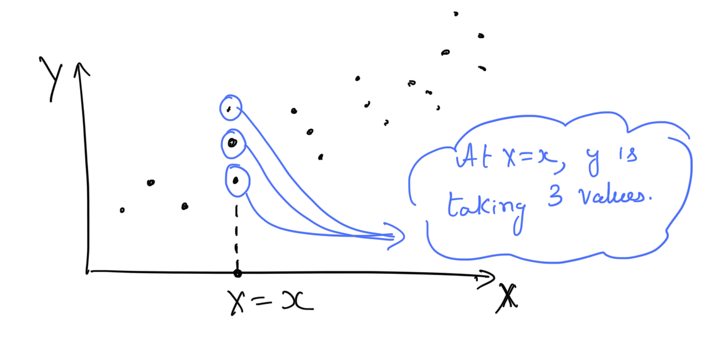
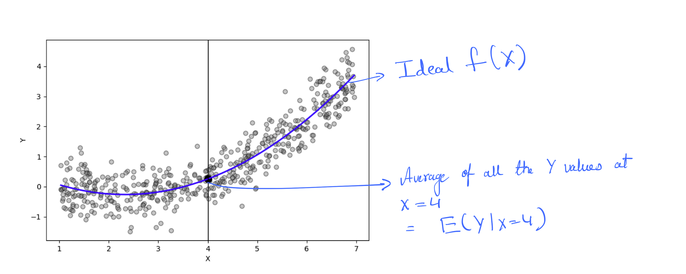
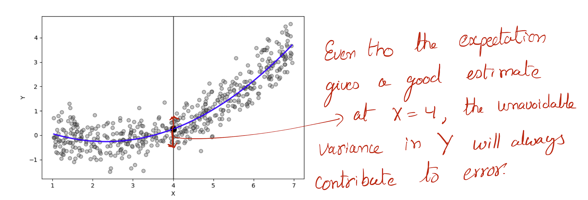

Regression
Table of Contents
1. Definition
We have output variable \(Y\) and vector of \(p\) independent input variables \(X\).
\begin{equation} X = \begin{bmatrix} X_1 \\ X_2 \\ X_3 \\ \vdots \\ X_p \end{bmatrix} \end{equation}In Regression problem the variables are quntitative (that means \(Y\) and \(X\) can be represented using numeric values.). We represent the relationship between \(X\) and \(Y\) using a regression function \(f\) and error \(\epsilon\).
\begin{equation} Y = f(X) + \epsilon \end{equation}The goal here is to estimate \(f\).
1.1. Notes
- An instance of \(X\) is prepresented using \(x\).
- An instance of \(Y\) is prepresended using \(y\) (at this point \(y\) is univariate ???true?).
- Typically there can be multiple values for \(y\) at same \(x\). Below figure shows an example when \(p = 1\).
An instance of \(x\) may have multiple values of \(y\).

Figure 1: At an instance of \(x\) we may have multiple \(y$\) values.
2. Ideal regression function
An ideal \(f(X)\) at \(X = x\) with regard to mean-squared perdiction error is \(E(Y|X=x)\). This is called conditional expectation. This function is theoritical and not estimated from data. In practice we will not have data at every \(X = x\).

Figure 2: Ideal \(f(X)\). (code)
When there are \(p\) predictors,
\begin{equation} f(X) = E(Y|X_1 = x_1, X_2 = x_2, \dots, X_p = x_p) \end{equation}3. Estimate regression function
An estimate of \(f(X)\) using data is represented using "hat", \(\hat{f}(X)\).
4. Error
4.1. Irreducible error (\(\epsilon\))
\(\epsilon = Y - f(X)\) is the irreducible error. Even tho, we know the ideal function \(f(X)\) at each \(X=x\) we still make prediction errors. This is happens due to the presense of distributions of \(Y\) values at each \(X=x\).

Figure 3: The unavoidable error, \(\epsilon\).
4.2. Error of estimate \(\hat{f}(X)\)
The sum of squared error when using the estimate \(\hat{f}(X)\) can be split into two error components, (1) reducible error and (2) irreducible error.
\begin{equation} E[(Y - \hat{f}(X))^2|X=x] = [f(x) - \hat{f}(x)]^2 + Var(\epsilon) \end{equation}- \([f(x) - \hat{f}(x)]^2\) is reducible
- \(Var(\epsilon)\) is irreducible.